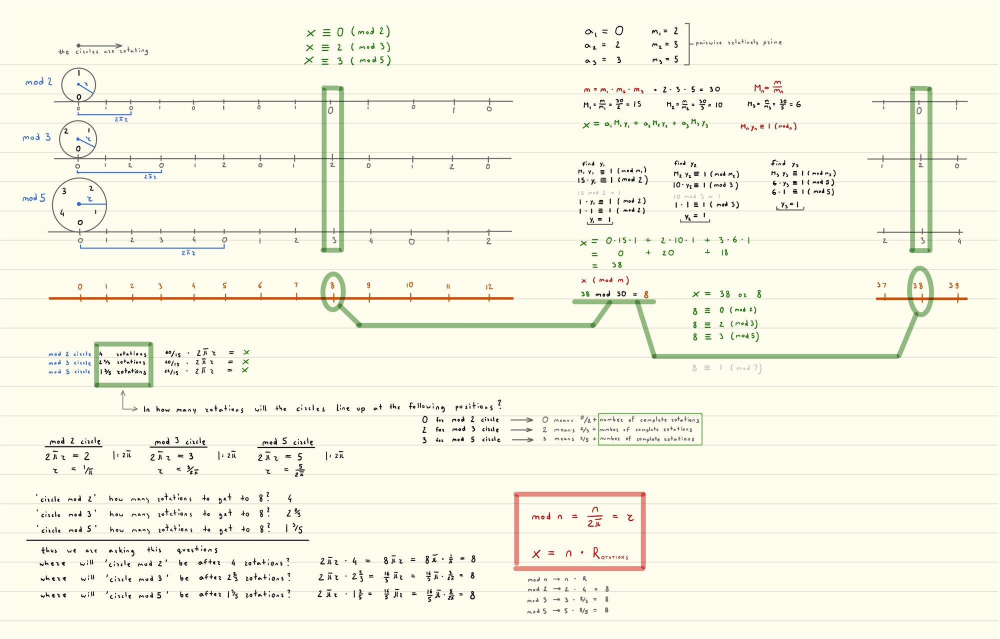

Rolling Circles: a picture of the Chinese Remainder Theorem
Give every modulus its own wheel, and make each wheel's circumference equal to its modulus. Roll all the wheels along the same number line. The Chinese Remainder Theorem asks for a spot where every wheel touches the ground at the number you asked for. That spot is the answer.
Roll the wheels
Choose the puzzle
Find x such that
How far has each wheel turned?
A wheel with circumference n that has rolled to x has turned x ÷ n times. The leftover fraction tells you which mark is touching the ground.
The two formulas from my notes
x = n · R
r = n ⁄ 2π. A wheel for "mod n" needs a circumference of exactly n units, so one full turn covers one full cycle of remainders. Circumference is 2πr, so the radius is n ⁄ 2π.
x = n · R. If the wheel has turned R times, it has rolled R circumferences, so it sits at x = n · R. For the answer 8: the mod 2 wheel turns 4 times, the mod 3 wheel 2⅔ times, and the mod 5 wheel 1⅗ times, and 2·4 = 3·2⅔ = 5·1⅗ = 8.
The same answer, by algebra
The wheels show you where the answer is. The standard construction computes it. These steps update with the puzzle above.
Another view: phases
Cut a circle into n equal slices, like a pizza. The slice edges sit at 0/n, 1/n, …, (n−1)/n of a full turn, and after n/n you are back at the start. Those fractions, called phases, behave exactly like the remainders 0, 1, …, n−1 mod n. Each dot below is a wheel's current phase.
This link between turning and remainders is old and deep. Gauss worked with it in the early 1800s through the points on a circle that solve xⁿ = 1, and the same idea of reading phases is what lets a quantum computer factor numbers with Shor's algorithm.
Where this came from
I drew this one morning in spring 2016, as an undergraduate taking a course that covered the Chinese Remainder Theorem. Nobody showed it to me; I was trying to see why the theorem works instead of only following the formula. When I brought it to my professor, I learned that the connection between rotation and modular arithmetic goes back to Gauss. So I had rediscovered something classical, in my own form: wheels whose circumference is the modulus, rolling on a shared number line.
Here are the original notes. The green bars mark where the three wheels line up at 8 and again at 38, and the red box holds the two formulas above.
